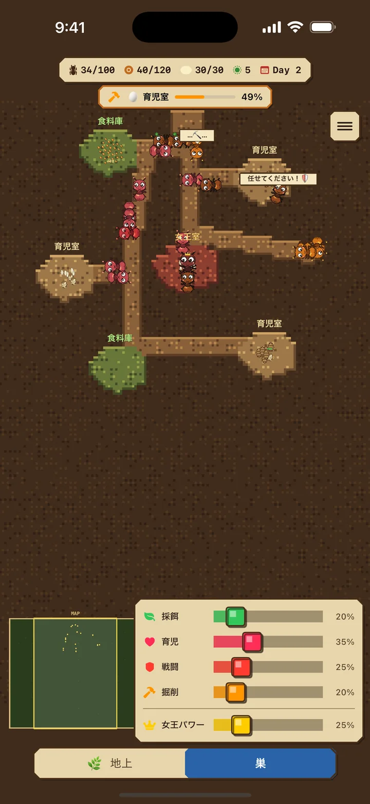
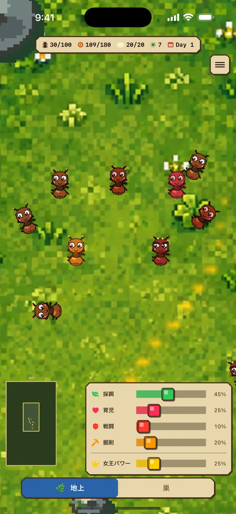
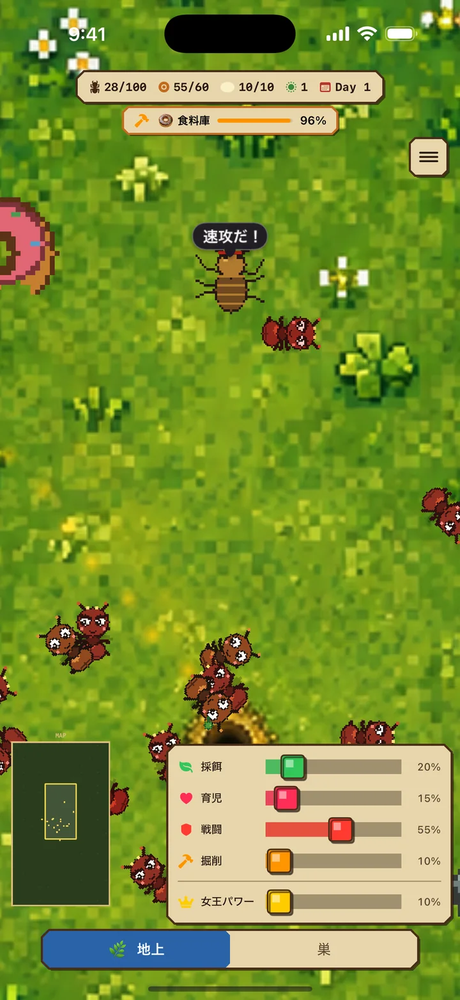
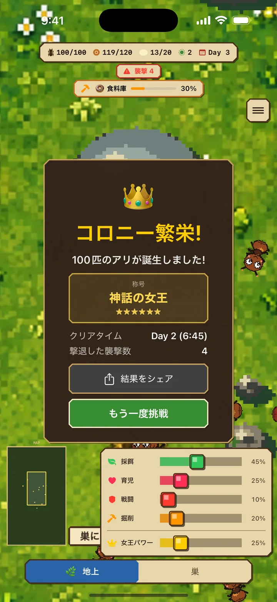

採餌係(緑)
地上で食料を集めて巣に運ぶ
アリさん日記 iOS
アリ育成・巣作りシミュレーション × リアルタイム戦略
「アリさん日記」は、アリのコロニーを育成するリアルタイム戦略ゲームです。女王アリを中心に、働きアリたちの役割を調整しながら、敵の襲撃を乗り越えて100匹のコロニーを築き上げましょう。
無料・広告あり / iPhone向け / iOS 17.0+


01 2つの世界を探索
掘削係を割り当てると、既存の通路から巣が有機的に広がり、必要に応じて餌倉庫か育児室が自然にできます。
地上: 食料を採取し、敵と戦う危険な世界
巣: 幼虫を育て、部屋を掘って拡張する安全な場所
部屋が増えると餌と育児の上限が増えます。餌倉庫が満杯なら採餌係は待機し、空きができると自動で再開します。
02 4つの役割で戦略を立てる
状況に応じて役割の割合を調整することが、生き残りの鍵です。
地上で食料を集めて巣に運ぶ
幼虫を育てて新しい働きアリに
敵と戦ってコロニーを守る
掘って巣を広げる — 部屋が増えると餌・育児の上限が増える
女王パワーを上げると産卵が最大3倍速くなります。ただし女王の空腹速度は最大8倍になり、育児係は女王への給餌・卵運搬・幼虫の世話で多忙になります。コロニーの状況に合わせて調整しましょう。

03 敵の襲撃を防衛せよ
時間経過とともに、敵の襲撃が激しくなります。事前に兵隊アリを増やして備えましょう。
状況に応じて役割の割合を調整することが、生き残りの鍵です。
App Storeでダウンロード04 スコアアタックに挑戦
100匹達成までのタイムで6段階の称号が決まります。15分未満の「神話の女王」を目指しましょう。結果は称号ごとにデザインが変わるカード画像でシェアできます。
100匹達成までの時間がスコアになります。最短記録を目指して、何度も挑戦しましょう!


アリさん日記
女王アリを守り、100匹のコロニーを目指せ!
App Storeでダウンロード無料・広告あり / iPhone向け / iOS 17.0+